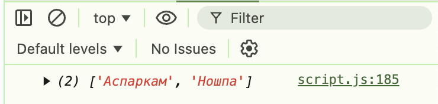

З об'єкту medicines потрібно отримати масив в якому будуть лише назви препаратів. З масиву потрібно прибрати медикаменти , в яких строк зберігання уже пройшов . У новому масиві відсортувати медикаменти у хронологічному порядку. Результат вивести у консоль. Застосувати стрілочні функції. Напишіть наступні функції:
const medicines = {
Агалгін: new Date("2022-05-01"),
Ношпа: new Date("2025-07-02"),
Альфахолін: new Date("2024-12-21"),
Аспірин: new Date("2022-08-15"),
Аспаркам: new Date("2025-04-18"),
};
const medicines = {
Агалгін: new Date("2022-05-01"),
Ношпа: new Date("2025-07-02"),
Альфахолін: new Date("2024-12-21"),
Аспірин: new Date("2022-08-15"),
Аспаркам: new Date("2025-04-18"),
};
const getMedicinesNames = (medicines) => {
return Object.keys(medicines);
};
const removeExpiredMedicines = (medicines) => {
const currentDate = new Date();
return Object.entries(medicines)
.filter(([medicine, expirationDate]) => expirationDate > currentDate)
.reduce((acc, [medicine, expirationDate]) => {
acc[medicine] = expirationDate;
return acc;
}, {});
};
const sortByExpirationDate = (medicines) => {
return Object.entries(medicines)
.sort(([, a], [, b]) => a - b)
.reduce((acc, [medicine, expirationDate]) => {
acc[medicine] = expirationDate;
return acc;
}, {});
};
const validMedicines = removeExpiredMedicines(medicines);
const sortedMedicines = sortByExpirationDate(validMedicines);
const names = getMedicinesNames(sortedMedicines);
console.log(names);
